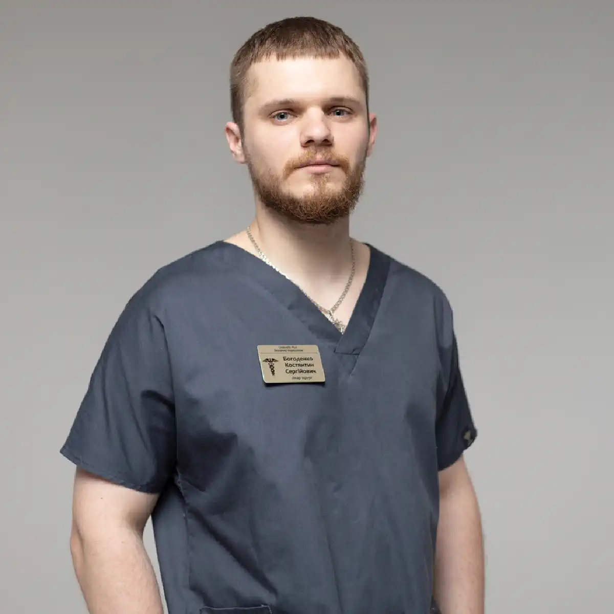

+38(068) 79 72 782
+38(068) 79 72 782Підшивка від наркотиків у Харкові
Радикальне лікування залежності


Безкоштовна консультація, працюємо цілодобово 24/7
Радикальне лікування залежності
Подшивка від наркотиків у Харкові — це один із методів протирецидивного захисту, який застосовується в рамках комплексного лікування залежності. Процедура спрямована на формування стійкої відмови від вживання психоактивних речовин і зниження ризику зриву після детоксикації. Подшивка не замінює повноцінне лікування, але допомагає закріпити результат терапії та підтримати пацієнта в період відновлення.
Суть методу полягає у введенні препарату пролонгованої дії, який формує фізіологічний або психологічний бар’єр до вживання наркотиків. Залежно від обраної схеми засіб може знижувати потяг до речовини, блокувати її ефект або викликати виражений дискомфорт при спробі вживання. Це допомагає пацієнту утриматися від зриву в найбільш складний період після припинення вживання, коли психологічний потяг ще зберігається.
Метод застосовується за медичними показаннями і проводиться тільки після консультації спеціаліста, оцінки стану здоров’я та підготовки пацієнта. Перед процедурою лікар уточнює стаж вживання, наявність хронічних захворювань, особливості психоемоційного стану і можливі протипоказання. Також важливо, щоб пацієнт перебував у тверезому стані та пройшов етап детоксикації, оскільки проведення процедури на тлі інтоксикації може бути небезпечним.
Сама процедура виконується в стерильних умовах і займає відносно небагато часу. Після неї пацієнт отримує рекомендації щодо режиму, спостереження і подальшого лікування. У перші тижні особливо важливо дотримуватися рекомендацій лікаря та уникати ситуацій, пов’язаних із ризиком вживання, оскільки саме цей період вважається найбільш уразливим. Комплексний підхід, що включає медикаментозну підтримку, психотерапію та спостереження, значно підвищує ефективність лікування і допомагає зберегти тверезість. Подшивка показує найкращі результати тоді, коли вона поєднується з психологічною реабілітацією, зміною способу життя та підтримкою близьких. Такий підхід допомагає не лише знизити ризик зриву, але й сформувати стійку мотивацію до життя без наркотиків.
Подшивка від наркотиків — це медична процедура, під час якої в організм вводиться препарат тривалої дії, що блокує ефект наркотичних речовин або знижує потяг до них. Препарат може вводитися у вигляді імпланта, ін’єкції або іншої форми пролонгованої дії. Механізм дії залежить від використовуваного засобу. Деякі препарати блокують рецептори, через що вживання наркотика не викликає очікуваного ефекту. Інші формують виражений дискомфорт при спробі вживання. Це створює додатковий бар’єр і допомагає пацієнту утриматися від зриву. Перед проведенням процедури обов’язкова консультація лікаря-нарколога. Спеціаліст оцінює стан пацієнта, стаж вживання, наявність хронічних захворювань і протипоказань, а також переконується, що людина пройшла детоксикацію і перебуває у тверезому стані. Підготовчий етап важливий для безпеки процедури та підвищення її ефективності. Термін дії подшивки залежить від обраного препарату і може становити від кількох місяців до більш тривалого періоду. Протягом цього часу пацієнт отримує додатковий захист від рецидиву, що особливо важливо на етапі відновлення, коли зберігається психологічний потяг і підвищена вразливість до стресу.
Подшивка є частиною комплексного лікування, а не самостійним методом позбавлення від залежності. Найкращий результат досягається при поєднанні процедури з медикаментозною підтримкою, психотерапією, реабілітацією та зміною способу життя. Такий підхід допомагає не лише тимчасово стримати вживання, але й сформувати стійку мотивацію до тверезості. Після процедури пацієнту рекомендується дотримуватися рекомендацій лікаря, відвідувати контрольні консультації та продовжувати роботу з психологом або психотерапевтом. Підтримка спеціалістів і близьких значно підвищує ймовірність довгострокового результату і допомагає закріпити ефект лікування.
Подшивка може бути рекомендована пацієнтам, які вже пройшли детоксикацію і готові до відмови від вживання. Метод підходить людям із мотивацією до лікування, які бажають посилити контроль над станом і знизити ризик повернення до наркотиків. Процедура часто застосовується на етапі підтримувальної терапії, коли необхідно закріпити досягнутий результат і створити додатковий захист у період соціальної адаптації. Рішення про проведення подшивки приймає лікар після оцінки стану пацієнта і відсутності протипоказань.
Перед призначенням процедури спеціаліст враховує стаж вживання, тип наркотичної речовини, загальний стан здоров’я, наявність хронічних захворювань і психологічну готовність пацієнта. Важливо, щоб людина усвідомлювала мету процедури і була налаштована на подальше лікування, оскільки подшивка найбільш ефективна при внутрішній мотивації до тверезості та дотриманні рекомендацій лікаря. Подшивка може бути особливо корисною пацієнтам, у яких раніше вже були спроби лікування і зриви, а також тим, хто повертається у звичне соціальне середовище з потенційними тригерами вживання. Додатковий медикаментозний захист допомагає знизити ризик імпульсивного рішення повернутися до наркотиків і дає час для закріплення нових звичок і психологічних установок. Такий послідовний підхід підвищує ефективність лікування, допомагає зберегти стабільний стан і поступово відновити повноцінне життя без залежності.
Перед процедурою проводиться консультація нарколога, збір анамнезу і медичне обстеження. Важливо переконатися, що пацієнт не вживає наркотики в даний момент і готовий до лікування. Це необхідно не лише для безпеки, але й для того, щоб процедура дала очікуваний результат. Якщо в організмі зберігаються сліди наркотичних речовин, лікар може рекомендувати додаткову детоксикацію або відтермінувати проведення подшивки до повної стабілізації стану. Під час консультації лікар уточнює стаж вживання, вид психоактивних речовин, перенесені захворювання, наявність хронічних патологій і можливі протипоказання. За потреби можуть бути призначені додаткові аналізи або обстеження, щоб переконатися в безпеці процедури і підібрати оптимальний препарат. Такий підготовчий етап допомагає знизити ризик ускладнень і підвищити ефективність лікування. Також спеціаліст оцінює психологічну готовність пацієнта, пояснює механізм дії препарату, термін його дії і очікуваний ефект, щоб людина приймала усвідомлене рішення і розуміла важливість подальшого лікування.
Сама процедура виконується в стерильних умовах і займає порівняно небагато часу. Залежно від обраного методу препарат вводиться під шкіру або внутрішньом’язово. Маніпуляція проводиться з дотриманням медичних стандартів і зазвичай добре переноситься пацієнтами. Після введення пацієнт залишається під наглядом спеціаліста протягом певного часу, щоб переконатися в нормальній реакції організму і відсутності побічних ефектів. Це дозволяє своєчасно відреагувати на можливі індивідуальні реакції і забезпечити максимальну безпеку. Після процедури лікар дає рекомендації щодо режиму, самопочуття і подальшого лікування. Важливо дотримуватися вказівок спеціаліста, уникати вживання психоактивних речовин і відвідувати контрольні консультації. Пацієнту можуть пояснити, які відчуття вважаються нормальними у перші дні, на які симптоми слід звернути увагу і коли необхідно звернутися до лікаря. За потреби може бути призначена підтримувальна медикаментозна терапія, психотерапія або участь у реабілітаційній програмі, що допомагає закріпити результат і знизити ризик рецидиву.
Особливе значення має період соціальної адаптації після процедури. У цей час пацієнту важливо уникати провокуючих факторів, пов’язаних із попереднім оточенням або стресовими ситуаціями. Підтримка сім’ї, робота з психологом і поступове повернення до звичної діяльності допомагають сформувати стійкі навички тверезого життя і зміцнюють мотивацію до одужання. Комплексний супровід після подшивки дозволяє не лише забезпечити безпеку процедури, але й створити умови для стійкої відмови від наркотиків і поступового відновлення нормального способу життя. Послідовна робота зі спеціалістами допомагає пацієнту зміцнити результат лікування, відновити фізичний і психологічний стан і значно знизити ймовірність повернення до вживання.
Вартість подшивки від наркотиків у Харкові починається від 15000 грн.
| Популярні послуги | Ціна |
|---|---|
| Консультація нарколога | Від 1500 грн |
| Лікування наркоманії | Від 2499 грн |
| Крапельниця від наркотиків | Від 2499 грн |
| Виведення із запою вдома | Від 2199 грн |
Ефективність подшивки залежить від мотивації пацієнта, тривалості залежності, типу вживаних речовин і комплексності лікування. Процедура допомагає знизити ризик рецидиву, але найкращий результат досягається при поєднанні з психотерапією, медикаментозною підтримкою і реабілітацією.
Подшивка розглядається як частина програми лікування, а не як єдиний спосіб позбутися залежності. Вона створює додатковий захисний механізм у період відновлення, коли людина лише формує нові звички і вчиться жити без наркотиків. Завдяки пролонгованій дії препарату пацієнт отримує час для психологічної стабілізації, відновлення здоров’я і закріплення результатів терапії. Сама процедура не усуває причини залежності. Психологічний потяг, стресові фактори і звичні поведінкові моделі можуть зберігатися, тому без подальшої роботи зі спеціалістами ризик зриву залишається. Саме тому лікарі рекомендують поєднувати подшивку з регулярними консультаціями нарколога, психотерапією і участю в реабілітаційних програмах.
На ефективність лікування також впливає підтримка сім’ї і соціальне середовище пацієнта. Сприятлива обстановка, розуміння з боку близьких і відмова від контактів із попереднім оточенням, пов’язаним із вживанням, значно підвищують імовірність довгострокової ремісії. У деяких випадках спеціаліст може рекомендувати додаткові заходи — психологічні тренінги, групи підтримки або індивідуальну програму відновлення. При правильному комплексному підході подшивка стає важливим інструментом у лікуванні залежності, допомагаючи пацієнту утриматися від повторного вживання і поступово відновити контроль над життям. Чим раніше розпочато лікування і чим послідовніше дотримуються рекомендацій спеціалістів, тим вищий шанс зберегти стійку тверезість і повернутися до повноцінної соціальної та професійної активності.
Для підшивки застосовуються препарати пролонгованої дії, які підбираються індивідуально, здебільшого це налтрексон. Залежно від клінічної ситуації можуть використовуватися засоби, що блокують дію опіоїдів, знижують потяг або забезпечують тривалий контроль стану. Вибір препарату здійснюється лікарем з урахуванням типу залежності, стану здоров’я та цілей лікування. Перед призначенням підшивки спеціаліст обов’язково оцінює стаж вживання, особливості психоемоційного стану пацієнта, наявність хронічних захворювань і переносимість лікарських засобів. Це дозволяє підібрати максимально безпечний і ефективний варіант терапії, знизити ризик побічних реакцій і підвищити ймовірність стійкого результату. За потреби лікар може рекомендувати додаткову підготовку — детоксикацію, стабілізацію сну, корекцію тривожності або консультацію суміжних спеціалістів. Такий підхід підвищує безпеку процедури і робить лікування більш прогнозованим.
Препарати пролонгованої дії забезпечують поступове вивільнення активної речовини протягом тривалого часу. Завдяки цьому підтримується стабільна концентрація препарату в організмі, що допомагає знизити потяг до наркотиків і створити додатковий бар’єр проти повторного вживання. Такий механізм особливо важливий у перші місяці після лікування, коли ризик рецидиву залишається найвищим і пацієнту потрібна додаткова підтримка. Окрім фізіологічного ефекту, підшивка має і психологічний вплив. Усвідомлення того, що препарат діє тривалий час, допомагає пацієнту відчувати більшу впевненість у контролі над ситуацією і знижує імпульсивність рішень, пов’язаних із можливим вживанням. Це створює сприятливі умови для роботи з психологом, формування нових звичок і поступового відновлення нормального способу життя.
Підшивка сама по собі не усуває психологічні причини залежності. Найкращий результат досягається при поєднанні медикаментозного захисту з психотерапією, соціальною підтримкою і спостереженням спеціалістів. Комплексний підхід допомагає не лише запобігти зриву, але й відновити емоційний стан, мотивацію і навички тверезого життя. Регулярні консультації лікаря після процедури дозволяють контролювати стан пацієнта, оцінювати ефективність обраного методу і за потреби коригувати подальшу програму лікування. Такий формат підвищує безпеку терапії і сприяє довгостроковому збереженню результату. Послідовний медичний супровід і участь пацієнта в реабілітаційних програмах значно збільшують шанси на стійку ремісію і повернення до повноцінного життя без залежності.
Термін дії підшивки залежить від обраного препарату і дозування. У середньому ефект може зберігатися від кількох місяців до року. Лікар заздалегідь пояснює пацієнту передбачувану тривалість дії та рекомендації щодо подальшого спостереження.
Тривалість захисту також може залежати від індивідуальних особливостей організму, швидкості обміну речовин, стажу залежності та дотримання рекомендацій після процедури. У деяких пацієнтів ефект зберігається довше завдяки комплексній терапії та підтримувальному лікуванню, тоді як в інших потрібен більш частий контроль стану і додаткова допомога спеціалістів. У період дії підшивки пацієнту важливо регулярно відвідувати консультації лікаря, щоб оцінювати самопочуття, психологічний стан і ефективність обраної терапії. Такі візити дозволяють своєчасно виявити можливі труднощі, скоригувати програму відновлення і підтримати мотивацію до тверезого способу життя.
Після завершення терміну дії може розглядатися повторна процедура або перехід до інших методів підтримки. Рішення приймається індивідуально, з урахуванням динаміки стану пацієнта, рівня психологічної стійкості та ступеня ризику рецидиву. У деяких випадках достатньо продовжити психотерапію і реабілітацію, в інших — лікар може рекомендувати повторну підшивку або альтернативні методи протирецидивного захисту. Послідовний контроль і своєчасне продовження терапії допомагають зберегти стабільність, зміцнити результат лікування і знизити ймовірність повернення до вживання. Комплексний підхід, що включає медичне спостереження, психологічну підтримку і соціальну адаптацію, створює найбільш сприятливі умови для довгострокової ремісії та відновлення повноцінного життя.
У наркологічній службі UmbrellaPlus у Харкові процедура підшивки проводиться з дотриманням медичних стандартів і повною конфіденційністю. Спеціалісти проводять діагностику, підбирають оптимальний препарат і супроводжують пацієнта на всіх етапах лікування. Перед підшивкою пацієнт отримує детальну консультацію, а після процедури — рекомендації щодо відновлення і профілактики зривів. Лікар пояснює особливості дії обраного препарату, термін його ефективності, можливі реакції організму і правила поведінки в період відновлення. Такий інформований підхід допомагає пацієнту відчувати впевненість і краще розуміти етапи лікування.
Процедура виконується в комфортних умовах із дотриманням стерильності та медичних протоколів. За потреби спеціалісти можуть запропонувати комплексну програму допомоги, що включає детоксикацію, медикаментозну підтримку, психотерапію і подальше спостереження. Це дозволяє не лише провести підшивку, а й забезпечити повноцінне лікування залежності. Після процедури пацієнт залишається під медичним наглядом і може звертатися за консультацією у будь-який час. Регулярний контакт зі спеціалістами допомагає контролювати стан, підтримувати мотивацію до тверезості і своєчасно коригувати програму відновлення. Індивідуальний підхід, конфіденційність і комплексний супровід роблять лікування більш безпечним і ефективним. Звернення до спеціалістів UmbrellaPlus у Харкові дозволяє пройти процедуру підшивки і отримати професійну підтримку на шляху до стабільного життя без залежності.
Підшивка може бути рекомендована за наявності сформованої залежності, після проходження детоксикації, при високому ризику рецидиву або необхідності посилити контроль над станом. Також процедура може застосовуватися як частина комплексної програми лікування і реабілітації. Найчастіше підшивку розглядають на етапі підтримувальної терапії, коли гострі симптоми вже зняті, але зберігається психологічний потяг і ризик повернення до вживання. У цей період медикаментозний захист допомагає пацієнту утриматися від зриву, зосередитися на відновленні і закріпити результати лікування.
Процедура може бути особливо корисною людям, які вже стикалися з повторними епізодами вживання після лікування або відчувають труднощі із самостійним контролем. Підшивка створює додатковий бар’єр і підвищує відповідальність пацієнта за дотримання тверезості, що важливо в перші місяці відновлення. Рішення про проведення підшивки приймається лише після консультації лікаря і оцінки стану пацієнта. Спеціаліст враховує стаж залежності, тип вживаних речовин, загальний стан здоров’я, мотивацію до лікування і наявність протипоказань. Такий індивідуальний підхід дозволяє визначити, чи буде процедура справді ефективною і безпечною.
Додатково лікар може оцінювати психологічну готовність пацієнта до тривалої тверезості та його здатність дотримуватися рекомендацій після процедури. Важливо, щоб людина усвідомлювала мету підшивки і розуміла, що вона є частиною лікування, а не його заміною. Усвідомлена участь пацієнта в терапії значно підвищує ймовірність стійкого результату. У поєднанні з психотерапією, спостереженням спеціалістів і соціальною підтримкою підшивка стає частиною комплексної стратегії лікування, спрямованої на зниження ризику рецидиву і формування стійкої ремісії. Послідовна робота з лікарем, участь у реабілітаційних програмах і підтримка близьких допомагають закріпити ефект процедури, відновити якість життя і сформувати стабільний спосіб життя без наркотиків.
Процедура не проводиться за наявності гострих інфекційних захворювань, тяжких соматичних порушень, виражених психічних розладів або індивідуальної непереносимості препаратів. Перед підшивкою обов’язково проводиться медична оцінка, що дозволяє виключити ризики і підібрати безпечну тактику лікування.
До тимчасових протипоказань також можуть належати стан алкогольної або наркотичної інтоксикації, виражений абстинентний синдром, підвищена температура, загострення хронічних захворювань, нестабільні показники артеріального тиску і серйозні порушення роботи серця або печінки. У таких випадках спочатку проводиться стабілізація стану пацієнта, і лише після покращення самопочуття може розглядатися можливість підшивки.
Медична оцінка включає консультацію нарколога, збір анамнезу, уточнення стажу вживання, переліку прийнятих препаратів і наявності супутніх захворювань. За потреби призначаються додаткові обстеження: лабораторні аналізи, оцінка роботи серцево-судинної системи та інші діагностичні процедури. Це дозволяє лікарю переконатися в безпеці обраного методу і знизити ймовірність ускладнень. Особлива увага приділяється психоемоційному стану пацієнта і його готовності до лікування. Підшивка проводиться лише за усвідомленої згоди та розуміння принципу дії препарату. Якщо мотивація недостатня або є ризик недотримання рекомендацій, спеціаліст може спочатку рекомендувати психотерапевтичну підготовку або інші етапи лікування. Такий поетапний підхід дозволяє мінімізувати ризики, забезпечити безпеку процедури і підвищити її ефективність. Індивідуальна оцінка стану пацієнта допомагає підібрати оптимальний метод лікування і створити надійну основу для подальшого відновлення та підтримання тверезості.
Після процедури пацієнту рекомендується продовжити лікування: відвідувати лікаря, проходити психотерапію і дотримуватися рекомендацій спеціалістів. Підтримувальна терапія допомагає закріпити результат і знизити ймовірність рецидиву. Регулярне спостереження дозволяє контролювати стан і своєчасно коригувати програму відновлення. Під час консультацій лікар оцінює фізичне самопочуття, емоційний стан, рівень мотивації і можливі фактори ризику. За потреби може коригуватися медикаментозна підтримка, рекомендуватися додаткові психологічні сесії або участь у реабілітаційних програмах.
Продовження психотерапії допомагає пацієнту краще зрозуміти причини залежності, навчитися справлятися зі стресом без психоактивних речовин і сформувати стійкі навички тверезого життя. Робота зі спеціалістом знижує ймовірність імпульсивних рішень і допомагає вчасно розпізнати ознаки можливого зриву.
Також важливу роль відіграє дотримання режиму сну, харчування і фізичної активності. Поступове відновлення організму, повернення до роботи або навчання, нормалізація соціальних контактів і підтримка сім’ї допомагають зміцнити результат лікування і підвищити впевненість пацієнта у своїх силах. Комплексний супровід після процедури робить лікування більш ефективним і безпечним. Послідовне виконання рекомендацій спеціалістів, регулярний контакт із лікарем і участь у програмах підтримки значно підвищують шанси на довгострокову ремісію і повернення до повноцінного життя без залежності.
Наркологічна служба UmbrellaPlus у Харкові пропонує сучасні методи лікування наркотичної залежності, включаючи підшивку, медикаментозну терапію, психотерапію і реабілітаційні програми. Лікування проводиться конфіденційно, з індивідуальним підходом і можливістю подальшого супроводу пацієнта.
Наркологи клініки проводять комплексну діагностику, оцінюють стан здоров’я, стаж вживання і психологічні особливості пацієнта, після чого підбирають оптимальну програму лікування. Такий персоналізований підхід дозволяє забезпечити безпеку терапії і підвищити її ефективність на кожному етапі відновлення. Комплексна допомога наркологів дозволяє стабілізувати стан, знизити потяг до наркотиків і допомогти людині повернутися до повноцінного життя. За потреби можлива організація лікування як у клініці, так і з виїздом лікаря додому, що особливо важливо в гострих ситуаціях або за потреби термінової допомоги.
Після основного етапу лікування пацієнт отримує рекомендації щодо підтримання тверезості, профілактики зривів і відновлення фізичного та психологічного стану. Регулярне спостереження наркологів, психологічна підтримка і участь у реабілітаційних програмах допомагають закріпити результат і знизити ризик повторного вживання. Звернення до наркологічної служби UmbrellaPlus у Харкові — це можливість отримати професійну, анонімну і своєчасну допомогу. Комплексний підхід, медична безпека і підтримка на всіх етапах лікування допомагають пацієнту пройти шлях до стійкої тверезості та відновлення якості життя.
Телефон для консультації і виклику нарколога додому: +38(050-021-69-57)
Так, ми суворо дотримуємося повної конфіденційності на всіх етапах лікування. Інформація про пацієнта, діагноз та проходження терапії не передається третім особам. Звернення до нас не тягне за собою постановку на облік. Ви можете бути впевнені у безпеці та анонімності.
Програма лікування розробляється індивідуально після консультації з фахівцем. Враховуються вид залежності, її тривалість, фізичний та психологічний стан пацієнта. Такий підхід дозволяє підвищити ефективність терапії та знизити ризик зриву. Ми не використовуємо шаблонні рішення.
Так, ми супроводжуємо пацієнтів і після основного курсу лікування. Проводяться консультації, рекомендації щодо адаптації та профілактики рецидивів. За потреби можлива подальша психологічна підтримка. Це допомагає зберегти результат та повернутися до повноцінного життя.
Анонимно

Помогли при наркотической зависимости
Номер телефону:
+380 (68) 797 27 82
+380 (50) 021 69 57
Адресу наркологічного центра вашого міста уточнюйте за
телефоном
Працюємо: Київ, Одеса, Львів, Харків, Дніпро, Запоріжжя,
Черкасах, Чугуєві, Чорноморську, Кам'янському
Telegram: t.me/umbrellaplus
Графік работы: Цілодобово